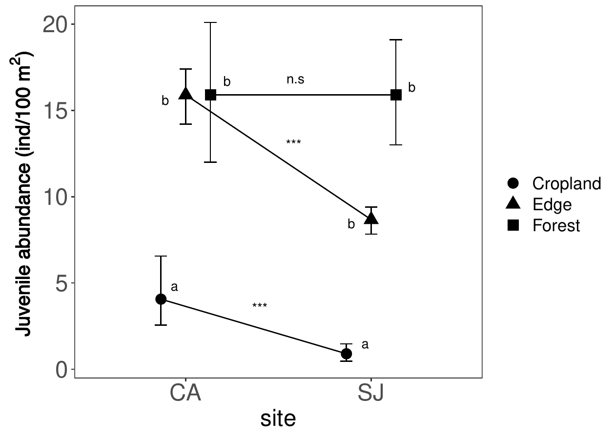
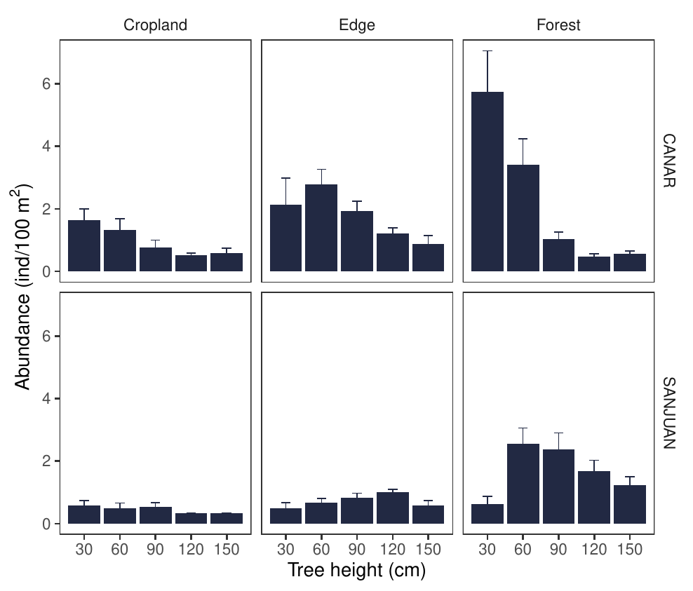
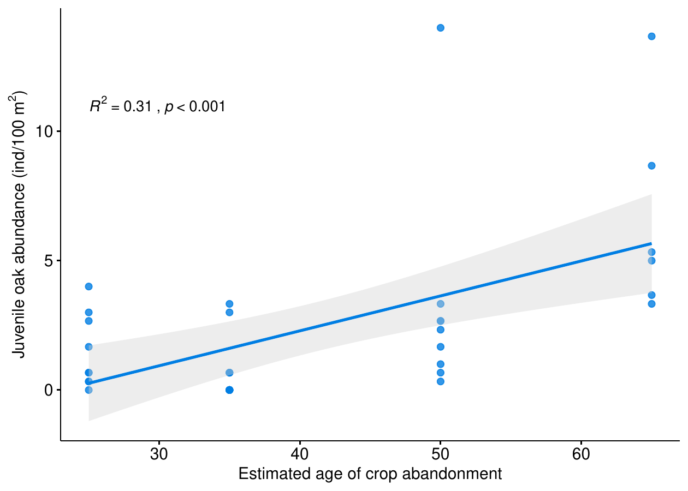

5 Colonization pattern of abandoned croplands by Q. pyrenaica in a Mediterranean mountain region
Antonio J. Pérez-Luque; Francisco J. Bonet-García & Regino Zamora 2021. Forests, 12 (11): 1584. doi:10.3390/f12111584
Abstract
Land abandonment is a major global change driver in the Mediterranean region where anthropic activity has played an important role shaping landscape configuration. Understanding the woodland expansion towards abandoned croplands is critical to develop effective management strategies. In this study we analyze the colonization pattern of abandoned croplands by Quercus pyrenaica in Sierra Nevada mountain range (southern Spain). We aimed to assess differences among populations within the rear-edge of the Q. pyrenaica distribution. For this purpose we characterized (i) the colonization pattern of Q. pyrenaica, (ii) the structure of the seed source (surrounding forests), and (iii) the abundance of the main seed disperser (Eurasian jay, Garrulus glandarius). The study was conducted in five abandoned croplands located in two representative populations of Q. pyrenaica located in contrasting slopes. Vegetation plots within three habitat-types (mature forest, edge-forest and abandoned cropland) were established to compute the abundance of oak juveniles. Abundance of European jay was determined using data of bird censuses (7-year). Our results indicate that a natural recolonization of abandoned croplands by Q. pyrenaica is occurring in the rear edge of the distribution of this oak species. Oak juvenile abundance varied between study sites. Neither surrounding-forest structure nor the abundance of jays varied significantly between study sites. The differences in the recolonization patterns seem to be related to differences in the previous- and post abandonment management.
5.1 Introduction
Land-use change is considered the main global change driver worldwide (Butchart et al. 2010, Winkler et al. 2021) affecting biodiversity (Sala 2000), modifying ecological processes (Lindenmayer et al. 2012), and altering the provision of ecosystem services (Hasan et al. 2020). Croplands abandonment and afforestation are the main processes of land-use change in the Northern hemisphere (Rey Benayas 2007, Winkler et al. 2021). In Mediterranean region, where anthropic activity has played an important role shaping landscape configuration, cropland abandonment has been widespread during the second half of the last century (Valbuena-Carabaña et al. 2010, Pías et al. 2014, Martínez-Fernández et al. 2015). Land-use change models predict an increase in this trend in the future (Rounsevell et al. 2006, Perpiña Castillo et al. 2021). The abandonment of traditional activities has left many Mediterranean landscapes in an almost barren state, with poor vegetation cover (Rey Benayas 2007, Sheffer 2012). Consequently, a natural vegetation regeneration process started with a spontaneously recovery of abandoned croplands (Debussche et al. 1999, Piussi 2000, Peñuelas and Boada 2003, Natale et al. 2007, Alvarez-Martínez et al. 2014).
Thus, the abandonment of traditional uses since the middle of the last century (MacDonald et al. 2000), has caused a decrease in anthropogenic pressure on Mediterranean forest ecosystems (Valbuena-Carabaña et al. 2010), being particularly important for mountain areas (Natale et al. 2007, Alvarez-Martínez et al. 2014, Pías et al. 2014, Jiménez-Olivencia et al. 2015a). The dramatic rural exodus occurred in mountain areas due to changes in socio-economic conditions (European Environment Agency 2010), resulting an abandonment of traditional activities and significant environmental changes (MacDonald et al. 2000, Piussi 2000, Natale et al. 2007, Rutherford et al. 2008, Zimmermann et al. 2010, Alvarez-Martínez et al. 2014). Moreover the abandonment of mountain agricultural areas is causing an increase in forest expansion via the spontaneous recovery of vegetation (Piussi 2000, Alvarez-Martínez et al. 2014), that can causes a homogenization of the landscape (Mietkiewicz et al. 2017) with several ecological consequences (Zimmermann et al. 2010).

Quercus pyrenaica Willd. woodlands, like other forest formations in the Mediterranean region, have been subjected to intense anthropogenic pressures over time (García and Jiménez 2009, Alba-Sánchez et al. 2021), which have led to the reduction of their distribution area, as well as to the modification of their floristic and structural patterns (Calvo et al. 1999, Gavilán et al. 2000, Tárrega et al. 2006). Historically, the woodlands of Q. pyrenaica have been exploited mainly for firewood, charcoal, and tannins (Ruiz de la Torre 2006, Sánchez Palomares et al. 2008). Some areas were also burned and thinned to create pastures with low densities of mature trees that provide acorns, firewood, and large areas for grazing (Alvarez et al. 2009, Herrera Calvo 2016, Valbuena-Carabaña and Gil 2017). All these anthropogenic processes have transformed the oak woodlands in a deep way that it is difficult to find stands that can be considered natural forests (Ruiz de la Torre 2006). Nonetheless, the decrease in anthropogenic pressure has paradoxically caused that many of the Q. pyrenaica oak stands present a state of advanced degradation, showing growth stagnation, lack of fruiting, and also symptoms of branch dieback (Cañellas et al. 2004, Bravo et al. 2008, Valbuena-Carabaña and Gil 2014, Piqué and Vericat 2015, Piqué et al. 2018).
Therefore, understanding the woodland expansion towards abandoned croplands would become critical to develop effective management strategies, particularly for populations representing the rear-edge of their distribution (Hampe and Petit 2005) which need a particular attention due to their high conservation value (Fady et al. 2016). The study of ecological dynamics within the rear-edge populations is considered essential to establish proper management guidelines under current climate uncertainties (Jump et al. 2010, Fady et al. 2016). Rear-edge populations are often adapted to local environmental conditions at the limit of the species ecological amplitude, and often show a long-term persistence (Hampe and Petit 2005). Local responses to environmental changes may differ from the species mean response (Castro et al. 2004, Benavides et al. 2013, Matías et al. 2017), and such differences may either promote or hamper the survival of edge populations under global change (Jump et al. 2010, Fady et al. 2016). In this work we analyze the colonization pattern of abandoned croplands by Quercus pyrenaica in Sierra Nevada mountain region. This mountain has undergone significant land use changes in the last 50 years (Jiménez-Olivencia et al. 2015b) with increases of forest densities (Jiménez-Olivencia et al. 2015a), and tree growth (Pérez-Luque et al. 2020). We are interested in exploring the colonization pattern of abandoned croplands by Q. pyrenaica on both slopes of the Sierra Nevada. We aimed to assess differences among populations in the rear edge of its distribution. Our specific goals are (i) to analyze the colonization pattern of abandoned cropland by Q. pyrenaica and its relationship with time after abandonment; (ii) to explore differences on the structure of the seed source (mature woodlands); and (iii) to compare the abundance of the main seed disperser (Eurasian jay, Garrulus glandarius).
5.2 Material and Methods
5.2.1 Sampling description
Table: Main characteristics of the abandoned croplands studied. {#tbl-coloniza-croplands}
(Tabla compleja pendiente de revisión manual.)
We sampled 5 abandonment croplands located at two Pyrenean oak forests in contrasting slopes of Sierra Nevada (southern Spain): Robledal de San Juan (SJ), located at the northern aspect (37°7’29.63"N, 3°21’54.60"W; Güejar-Sierra, Granada, Spain); and Robledal de Cáñar (CA), located at the southern aspect (37°57’28.04"N, 3°25’57.1"W; Cáñar, Granada). We selected oak populations located at contrasting slopes since differences in environmental variables have been reported for those oak woodlands (Pérez-Luque et al. 2021). Each cropland was delimited using land-use and land-cover map of Andalusia for 1956 (CMA 2007) combined with a detailed photographic interpretation of the black and white 1956 orthophotos (1-m spatial resolution) (Navarro-González et al. 2012). The estimation of the age abandonment for each cropland were performed combining intrepretation of orthophotographies with information from local neighbors. We compiled all available aerial ortophotographies of the study areas from Fototeca Digital of the Spanish National Geographic Institute (http://fototeca.cnig.es/). These dates were verified using information about past land-use, compiled from local neighbours (Moreno-Llorca et al. 2014, 2016). The estimated rank of ages could be considered accurate (see Table [tab:coloniza:croplands]).
For each abandonment cropland, vegetation plots (30 m x 10 m) were randomly distributed in the old field; at the forest edges; and inside the surrounding forests (Figure [fig:coloniza:transects]). The number of plots within the old fields and surrounding forests were proportional to the size of the abandonment cropland (Table [tab:coloniza:croplands]). A total of 83 vegetation plots were sampled in autumn 2012. In each vegetation plot all tree species were recorded, and tree height and diameter were measured. For each transect we computed the juvenile abundance as the number of individuals smaller than 150 cm on height. We did not distinguish the reproductive and vegetative origins of young oaks, since it is difficult due to the resprouting trait of this species. In addition to the juvenile abundance, we explored differences between several recruitment stages based on individual size (Plieningeretal2010LargeScalePatterns?). We considered five size categories based in height (every 30 cm). All data were properly documented and published in an international repository (Pérez-Luque et al. 2015). To explore the main bird disperser in our study sites, we used bird censuses carried out by the Sierra Nevada Global Change Observatory (https://obsnev.es/). This dataset contains bird censuses at different ecosystems types of Sierra Nevada since 2008 (Barea-Azcón et al. 2012, Pérez-Luque et al. 2016). We only used data for the Eurasian jay (Garrulus glandarius), since it is the main disperser of Quercus pyrenaica (Gómez 2003). We assumed that jays can move acorns into abandoned croplands based on the habitat-preferences to cache acorns reported by Pons and Pausas (2007), and also considering preliminary data on jays flights carried out in our study sites by Zamora et al. (2013), who found a high proportion of flights of this bird at the same elevation, and around 40% of open areas as arrival habitat. Since we were interested in the comparison of the Eurasian jay populations between the two study sites, we computed the annual bird abundances (in terms of birds/10 ha) for each site during a 7-year period (2008-2013). The sampling procedures was the line-transect method with a bandwith of 50 m (25 m on each side). Transects length were 2.80 km for Cáñar site (CA), and 3.22 km for San Juan site (SJ). Sight and sound records within the sample area were accepted as contacts. All transects were sampled in the early morning. Eurasian jay abundance was calculated in terms of birds/10 ha. All counts in one month were averaged, and the yearly result was obtained from the average of all the months studied. For more details about bird censuses see Barea-Azcón et al. (2012) and (ZamoraBareaAzcon2015LongTermChanges?).
5.2.2 Data analysis
We used the vegetation plots carried out inside the forest (habitat type = forest) to analyze the structure of the seed source (surrounding forest). Several parameters related to forest structure and functioning were computed: tree density, juvenile abundance, tree species composition, tree size related statistics (i.e. mean, median, maximum, 75 and 90 percentiles of tree-height), and basal area (BA). Differences between sites were assessed using the non-parametric Mann–Whitney U-test, since data did not meet normality nor/either homocedasticity assumptions. We also compared whether there was variation within plots belonging to the same sites. ANOVA analyses were performed to explore differences of bird disperser abundance (G. glandarius) between sites and across years.
The variation of the juvenile abundance between study sites, habitat type, and their interaction (site-habitat type), was analyzed using Generalized Linear Models with a Tweedie distribution with a log link (Dunn and Smyth 2018). Study sites and habitat type were the explanatory variables. Prior to the analysis, data exploration was applied following protocols described by Zuur et al. (2010) and Ieno and Zuur (2015). As the dataset comprised count data, we initially used the Poisson and the Negative Binomial distribution. However, these models were overdispersed. A variance power parameter of 1.28 (1.20-1.40, 95% confidence interval) were used in the Tweedie GLM model. This parameter was estimated using the tweedie.profile function of the tweedie R package (Dunn and Smyth 2005, Dunn 2017). Model comparison (univariate models) was carried out using the Akaike’s information criterion (AIC) (Burnham and Anderson 2010). The model accuracy was tested by Nagelkerke’s pseudo-\(R^2\), used as a measure of goodness of fit. The significance of the explanatory variables in the selected model was tested using the likelihood ratio tests (LRT). Wald z-tests and Tukey’s HSD-corrected post hoc comparisons were used to test for differences in juvenile abundance among sites and habitat-type.
Table: Forest attributes of northern (SJ) and southern (CA) sites. U Mann-Withney statistics with significance at 0.05 level. Mean and SE are shown {#tbl-coloniza-forest}
(Tabla compleja pendiente de revisión manual.)
| llllll@ model.name | df | logLik | AICc | AICc | Nagelkerke R2 |
|---|---|---|---|---|---|
| Habitat type + Site + Habitat type () Site | 6 | -221.89 | 457.78 | 0 | 0.970 |
| Habitat type + Site | 4 | -231.83 | 473.65 | 15.87 | 0.955 |
| Habitat type | 3 | -236.21 | 480.42 | 22.64 | 0.946 |
| Site | 2 | -291.06 | 588.12 | 130.34 | 0.116 |
| null model | 1 | -293.09 | 590.19 | 132.41 | 0 |
5.3 Results
The forest structure of Quercus pyrenaica woodlands did not show significant differences for the forest attributes between study sites (Table [tab:coloniza:forest]). Quercus pyrenaica woodlands of southern site (CA) showed higher tree density but smaller tree heights (mean, median and percentiles) than those on the northern site (SJ) (Table [tab:coloniza:forest]). In addition, higher abundance of juveniles was found for CA site, which also showed greater basal area than SJ site (Table [tab:coloniza:forest]).
Regarding the abundance of Garrulus glandarius, no differences between study sites were found (\(F_{1,82}\) = 2.387; p = 0.126; CA = 1.69±0.21 and SJ = 1.33±0.22 birds/10ha), neither across years in the studied period (2008-2014) (\(F_{6,82}\) = 1.234; p = 0.297). The interaction term was also not significant (\(F_{6,82}\) = 1.26; p = 0.284).

The juvenile oak abundance model including all terms (i.e. full model) showed higher strength of empirical support than did models for each of the independent variables (i.e. univariate models) (Table [tab:coloniza:modelselection]). Oak juvenile abundance differed among habitat types (\(F_{2,77}\) = 72.95; p < 0.0001), and between study sites (\(F_{1,77}\) = 8.16; p = 0.0054; Table [tab:coloniza:anova]).
A decreasing gradient of oak-juvenile abundance was found across habitat-type, from higher values in forest type (15.90 ± 1.30 ) to lower values inside the old croplands (2.43 ± 0.55 ; Figure [fig:coloniza:interaction]). The abundance of oak juveniles in the old croplands of the southern site (CA) was significantly higher (4.06 ± 0.98 ) than in those of the northern site (SJ; 0.90 ± 0.26 ).
The size distribution of juveniles was also different among the study sites (Figure [fig:coloniza:treeCategory]). An even size-distribution of the oak juveniles was observed in the old croplands of northern site. Conversely, higher contribution of small oak juveniles (< 30 cm) were found at old croplands of southern site (Figure [fig:coloniza:treeCategory]).
A positive relation was found between the oak juvenile abundance and the estimate age of crop abandonment (Figure [fig:coloniza:ageCrop]) with higher oak juvenile abundances in the earlier abandoned croplands
5.4 Discussion
| Variable | SS | df | F | p-value |
|---|---|---|---|---|
| Habitat type | 233.89 | 2 | 72.95 | 0.0001 |
| Site | 13.09 | 1 | 8.16 | 0.0054 |
| Habitat type $$ Site | 27.19 | 2 | 8.48 | 0.0004 |
| Residuals | 123.43 | 77 |
We observed a colonization process of Quercus pyrenaica into abandoned croplands in this mountain region despite the strong recruitment constraints described for this species (Gómez et al. 2003, Bravo et al. 2008, Perea et al. 2014). Forest expansion towards abandoned croplands has been recorded in several marginal habitats in other European mountainous regions (Piussi 2000, Kozak 2003, Vicente-Serrano et al. 2004, Lasanta-Martínez et al. 2005, Natale et al. 2007, Améztegui et al. 2010, Alvarez-Martínez et al. 2014, Ameztegui et al. 2016), as consequence mainly of rural depopulation and decrease on herbivores pressure (MacDonald et al. 2000, European Environment Agency 2016). Our results show a relationship between juvenile-oak abundance and the estimated age of crop abandonment (Figure [fig:coloniza:ageCrop]). As the time after crop abandonment increases, species heterogeneity and functional diversity of the ecosystem increases (Hermy and Verheyen 2007, Puerta-Piñero et al. 2012), boosting the multifuntionality of the ecosystems (Cruz-Alonso et al. 2019).

It has been also reported that both age of the surrounding forests and previous land use could influence the colonization pattern (Minotta and Degioanni 2011). In this sense, it is expected that the colonization process will continue, since the forests surrounding our study areas are relatively young. Dendrochronological estimates of the forest age for our study woodlands, ranged approximately 90-100 and 200 years for northern and southern oak populations respectively (Gea-Izquierdo and Cañellas 2014, Pérez-Luque et al. 2020), which is younger than the estimated ages for these forests along their distribution range (Gea-Izquierdo and Cañellas 2014). Cruz-Alonso et al. (2019), in a study of the recovery of multifunctionality in Mediterranean forests, reported for this oak species, a minimum of 80 years after the abandonment for the recovery of the reference multifunctionality.
The colonization pattern of abandoned croplands varies within the rear-edge of the Q. pyrenaica. Our results showed different abundances of oak juveniles between sites, with higher abundances at the southern sites (CA) (Table [tab:coloniza:anova]; Figure [fig:coloniza:interaction]). It is known that the distance to the source and the structure of the seed source influenced the propagule input into new habitats (Hewitt and Kellman 2002, Kurek et al. 2019, Nathan2006LongDistanceDispersal?). In our study sites, all the abandoned croplands are surrounded by native forests. Thus, the observed differences in oak juvenile abundance would not seem explained by the distance to the seed source (Table [tab:coloniza:croplands]). Regarding to the structure of the seed source, we found no differences between the study sites (Table [tab:coloniza:forest]). Forest attributes potentially related to the acorn production (Gea-Izquierdo et al. 2006) are not different for surrounding forests between study sites (Table [tab:coloniza:forest]). Although in our work we have not carried out an estimation of acorn production that would allow us to compare between study sites, previous studies analyzing the variation in reproductive parameters and comparing the acorn production across oak woodlands of Sierra Nevada, found slight differences among oak populations, with higher acorn yield for southern oak woodlands than northern one (Leal 2013). However, the data series used by Leal (2013) was very short (only two years) and Quercus pyrenaica have a marked mast-seeding behaviour (Gómez et al. 2001, Bravo et al. 2008). Besides that, there not seem to be marked differences in the current seed source that could explain our observed differences in the abundance of juveniles in the abandoned crops.

Another key aspect for the tree colonization of abandoned croplands is the dispersion vectors. Q. pyrenaica acorn are mainly dispersed by woodmouse (Apodemus sylvaticus) and Eurasian jay (Garrulus glandarius)(Gómez et al. 2003, Perea et al. 2014). We used a time series (a 7-year period) to analyze the abundance of jays at each study site. The aim of using this time series was to explore whether there were differences between study sites with respect to the abundance of this bird acorn-disperser. We are aware of the limitation of using these data, i.e. we do not know if the abundance of jays at both sites has followed the same temporal trajectory, but we have used the longest time series we have for both sites, to at least find out if there are differences between the sites in recent years. Our results showed similar abundances of this acorn disperser between the two study sites. Therefore, the observed differences in oak juvenile abundance do not appear to be explained by differences in abundance of this acorn disperser. Having observed no differences in the seed source neither in the main dispersal vector, a logical next step would be to explore differences on the seed arrival site.
For the recolonization of abandoned croplands, besides the importance of factors related to dispersal in time (seed bank related) and space (distance related), the previous use to which the crop field has been subjected is a key factor determining the abundance of native tree species (Hermy and Verheyen 2007, Navarro-González et al. 2013). The colonization pattern of woody species is affected by fine-scale variations in abiotic factors (Milder et al. 2013, Leverkus et al. 2016), but it has been observed that land-use history mainly controlled the forest expansion rates (Alvarez-Martínez et al. 2014, Perring et al. 2016). The forest history of our study sites, inferred from several compiling studies (Titos 1990, Mesa-Torres 2009, Moreno-Llorca et al. 2014, 2016, Jiménez-Olivencia et al. 2015b, Pérez-Luque et al. 2020), indicated that both sites were subjected to intense anthropic uses in the past. At the northern site (SJ), uplands areas were dedicated to grazing, and in the forest areas there were also some croplands with grazing. In addition, timber extraction for mining were recording at this site. Southern site (CA) has been exploited for firewood, charcoal and acorns, with less presence of livestock use. Although we could not estimate the intensity of use to which both zones have been subjected before the abandonment of crops, the northern zone seems to have had a management history with higher grazing intensity than the southern site (Moreno-Llorca and Zamora 2012, Moreno-Llorca et al. 2014, 2016).
In addition to the land-use legacies previous to the cropland abandonment, another relevant question would be the management history after the crop cessation, focusing on the livestock pressure, since herbivory impose severe constraints to the establishment and regeneration of this oak species (Gómez et al. 2003, Perea et al. 2014). There is no data available on the temporal evolution of grazing pressure at detailed scale in our study sites. Only Robles-Cruz (2008) showed an general quantification for several ecosystems of Sierra Nevada. Notwithstanding, several studies and reports, combining interviews with shepherds and reviewing of historical documents, have determined the recent livestock history in several oak woodlands of the Sierra Nevada (Moreno-Llorca and Zamora 2012, Moreno-Llorca et al. 2014, 2016). For our study sites it has been observed both higher numbers of herds and sheperds, and more livestock density in the northern site (SJ) than in the southern one (CA), which could be translated into a greater herbivore pressure that would explain our observed differences in juvenile oak abundance within the abandoned croplands. This distinct herbivory pressure in the two study sites could explain the differences observed in the juvenile oak abundance not only at cropland habitat type either both at edge and forest habitat type. The exploration of abundance juveniles by size categories between habitats type for each study site showed lower abundance values for northern site (Figure [fig:coloniza:treeCategory]). The size-age structure is also more homogeneous at the northern site, reinforcing the hypothesis of higher herbivore pressure. Gómez et al. (2003) found that herbivory rather than abiotic factors is the main cause of seedling mortality of Q. pyrenaica in Sierra Nevada. Thus, herbivores killed most of the seedlings, although the way in which they severed the seedlings was very diverse (Gómez et al. 2003). They found that trampling by livestock and acorn predation by wild boards and hares were the main causes of the mortality observed, but the browsing by livestock is marginal (only 1% of the mortality) (Gómez et al. 2003). Another factor to consider is the presence of shrubs which can act as nurse plants. Facilitation by nurse plants has been reported as an essential process for the regeneration of some tree species (Gómez-Aparicio et al. 2004, Castro et al. 2006). The survival of Q. pyrenaica substantially increases when it is under individual pioneer shrubs (Castro et al. 2006, Costa et al. 2017). Shrubs may protect Q. pyrenaica seedlings from browsing and trampling of vertebrate herbivores. They also offer safe sites that reduce the high mortality rates during the summer in the early stages of recruitment (Baraza et al. 2004, Castro et al. 2006). Although we did not estimate the cover and diversity of shrub species in our studied abandoned crops, previous studies in the surrounding forests of the same localities did not found differences in the diversity and richness of shrubs within oak forests (Muñoz 2012).
5.5 Concluding remarks
The results of our study show that, even in the current increasingly dry climatic conditions, Q. pyrenaica woodlands are able to recover the abandoned former arable fields at the same altitudinal level where oak woodland is the potential vegetation. Thus, the Pyrenean oak woodland is clearly expanding in Sierra Nevada mountain range, a rear edge of the distribution of this oak species. This natural process can provide solutions for conservation of biodiversity, and enhances the mitigation of, and the adaptation to climate change (Chazdon et al. 2020). Besides this, active restoration could aid to recovery the oak forest multifunctionality (Cruz-Alonso et al. 2019) in the abandoned croplands that are being colonized by tree species.
The differences in the recolonization patterns within the rear-edge seems be related to differences in the management prior to and after abandonment of mountain croplands. A higher herbivory pressure after cropland abandonment seems to limit the forest expansion towards marginal habitats. Related to this, and in order to improve the forest expansion, it would be recommended to take advantage of the presence of native shrubs that offer safe sites. Those safe sites could aid to reduce the mortality of Q. pyrenaica seedlings, and therefore increase the establishment probabilities of this oak species. This also would aid to increase heterogeneity within the ongoing secondary forest, which also increase the resilience to perturbations y the recovery of the ecosystem multifunctionality (Cruz-Alonso et al. 2019, Stritih et al. 2021). On the other hand, attention also is needed to maintain healthy seed sources (surroundings forests), and a stable seed disperser community, particularly the Eurasian jay, since acorn dispersion by this bird species is considered a key process in the regeneration of Quercus forests after land abandonment (Pausas et al. 2006).